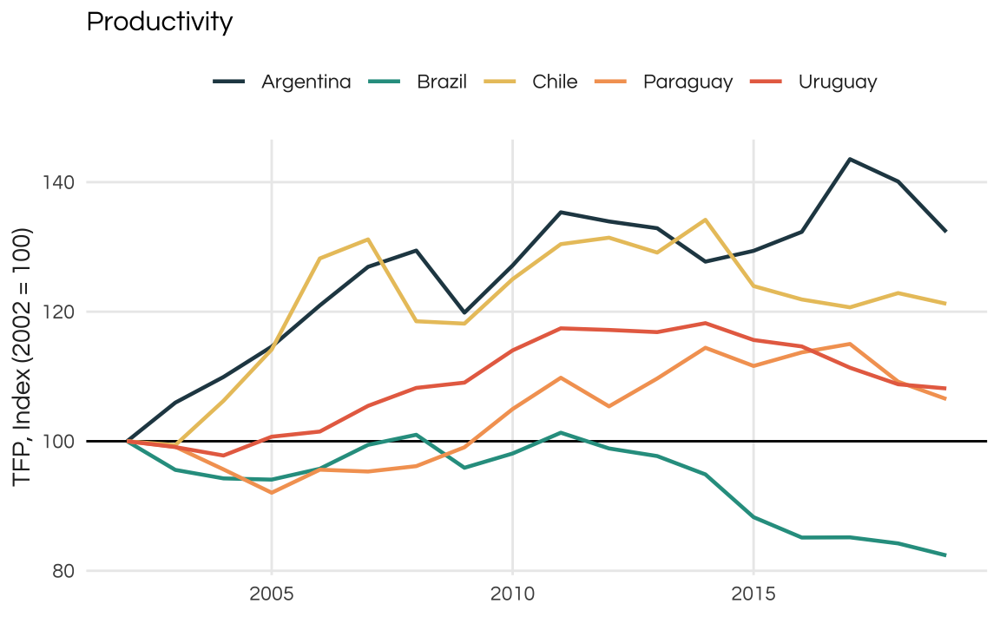

library(tidyverse)
library(sf)
#> Tables
library(gt)
library(gtExtras)
#> Scraping information
library(rvest)Uruguay
Uruguay has been making the headlines in the past decade in a good way: many consider the country to be an model democracy: topping the Economist’s Democracy Index and being the least corrupt country in Latin America are some factors that bring attention to this small country. It also appears to be one the least unequal countries in the region with a GINI index close to 40 (Brazil’s is somewhere around 52-53 for comparison).
As a native Brazilian, who lived most of his life in Porto Alegre - a mere 800km travel away from Uruguay’s capital Montevideo -, and a relatively fluent reader of the Spanish language, I must confess that I know very little about Uruguay. In fact, the little I know about Uruguay’s history is the brief time period when Uruguay was a contested territory between the Kingdoms of Spain and Portugal1.
So this saturday afternoon I decided to learn all that I could about Uruguay and (sort of) document my steps.
First things first
As a first step its always make sure everyone knows where we are. The code below highlights where Uruguay is in South America.
world_map <- st_as_sf(spData::world)
world_map <- world_map %>%
mutate(highlight = factor(ifelse(name_long == "Uruguay", 1L, 0L)))
ggplot() +
geom_sf(data = world_map, aes(fill = highlight)) +
geom_sf_label(data = world_map, aes(label = name_long)) +
scale_fill_manual(values = c("#edede9", "#219ebc")) +
guides(fill = "none") +
coord_sf(xlim = c(-85, -35), ylim = c(-10, -45)) +
theme_void()
Where to find the data?
When looking for socioeconomic and demographic data on countries I usually start at usual suspects:
- World Bank
- IMF
- Our World in Data
- UN
Unfortunately, Uruguay is not a member of the OECD so we can’t use that. For more precise/specific comparison, specially on GDP I also recommend both the Maddison Project and the Penn World Table. All of the aforementioned sources also have convenience packages built for R!
| Name | Site | R-package |
|---|---|---|
| IMF | link | IMFData, imfr |
| World Bank | link | WDI |
| UN | link | wpp2022 |
| Maddison Project | link | maddison |
| Penn World Table | link | pwt10 |
| OECD | link | oecd |
| Our World in Data | link | owidR |
The list above is not intended to be comprehensive but it’s a good starting point (plus, they’re all free). For Latin American countries it might be useful to include Global Data Lab and CEPAL. Also, I always like to check in for the National Statistical Bureau and the Central Bank of the country. In Uruguay’s case that would be the Instituto Nacional de Estadística (INE) and the Banco Central de Uruguay. By the way, some useful glossay/translations for foreigners include:
| Spanish | English |
|---|---|
| encuesta | survey/interview |
| ingreso/salario | income/wage |
| desarollo | development |
| inversión | investment |
| empleo | employment |
| desempleo | unemployment |
| promedio | average |
| alquiler/renta | rent |
| venta | sale |
Finally, if you don’t mind working with slightly outdated data (not my case) you can use packages such as gapminder to get a broad view on the country.
Some project setup
# Import Questrial font if needed
sysfonts::font_add_google("Questrial", "Questrial")
# Activate custom fonts
showtext::showtext_auto()
# A color palette
colors_report <- c("#264653", "#2a9d8f", "#e9c46a", "#f4a261", "#e76f51")
# A simple theme of plots
theme_report <- theme_minimal() +
theme(
text = element_text(family = "Questrial", color = "gray15"),
plot.title = element_text(size = 12, color = "black", face = "bold"),
plot.caption = element_text(size = 8),
legend.position = "top",
panel.grid.minor = element_blank()
)Basic facts about Uruguay
Economy and population
A good starting point is the Penn World Table included in the {pwt10} package. We can work this table to find some basic facts about Uruguay such as:
- Real GDP (
rgdpe) - Total population (
pop) - Avg. hours worked per year (
avh)
library(pwt10)
pwt = pwt10.0
tab_decade <- pwt %>%
# Get only the last year of each decade
filter(isocode == "URY", year %in% seq(1959, 2019, 10)) %>%
mutate(
# Real GDP per capita
rgdppc = rgdpe / pop,
# Convert population
pop = pop * 1e6,
# Convert year to character for easier formatting of the table
year = as.character(year)) %>%
select(year, rgdpe, rgdppc, pop, avh, hc, csh_x)
# Swap names for table
old_names <- names(tab_decade)
new_names <- c(
"Year", "Real GDP", "Real GDP per capita", "Population", "Avg. Hours Worked",
"Human Capital Index", "Share of Exports (%GDP)")
names(new_names) <- old_names
# The table
gt(tab_decade) %>%
cols_label(.list = new_names) %>%
fmt_number(columns = c(rgdpe:pop, avh), decimals = 0) %>%
fmt_number(columns = hc, decimals = 2) %>%
fmt_percent(columns = csh_x) %>%
sub_missing(missing_text = "-") %>%
gt_theme_538()| Year | Real GDP | Real GDP per capita | Population | Avg. Hours Worked | Human Capital Index | Share of Exports (%GDP) |
|---|---|---|---|---|---|---|
| 1959 | 18,377 | 7,402 | 2,482,770 | - | 1.80 | 4.69% |
| 1969 | 22,091 | 7,923 | 2,788,100 | - | 1.92 | 5.06% |
| 1979 | 27,998 | 9,669 | 2,895,688 | - | 2.12 | 7.82% |
| 1989 | 30,551 | 9,892 | 3,088,595 | - | 2.33 | 10.97% |
| 1999 | 42,008 | 12,699 | 3,308,012 | 1,722 | 2.51 | 11.26% |
| 2009 | 53,079 | 15,846 | 3,349,676 | 1,604 | 2.57 | 16.44% |
| 2019 | 73,411 | 21,206 | 3,461,734 | 1,533 | 2.78 | 17.47% |
Now, the table above could be improved since variables such as the unemployment rate or average hours worked could be averaged by decade for a more fair presentation. But the goal here is to keep things simple.
The first striking feature of the table for me was Uruguay’s population. In the 60 year period from 1959 to 2019, total population increased around 39% reaching 3,46 million. For comparison, the similar sized Brazilian state of Rio Grande do Sul has a population close to 10 million, despite suffering population losses due to migration in recent years.
LATAM
Lets compare how Uruguay fared against other LATAM countries. For this comparison I will take: Argentina, Brazil, Paraguay and Chile. I also add the most recent HDI estimate from the UN. Here I simply scrape the wikipedia page for “List of countries by Human Development Index”.
country_selection <- c("Argentina", "Brazil", "Chile", "Paraguay", "Uruguay")
tab_latam <- pwt %>%
# Get only the last year of each decade
filter(country %in% country_selection, year == 2019) %>%
mutate(
# Real GDP per capita
rgdppc = rgdpe / pop,
# Convert population
pop = pop * 1e6) %>%
select(country, rgdpe, rgdppc, pop, avh, hc, csh_x)
url <- "https://en.wikipedia.org/wiki/List_of_countries_by_Human_Development_Index"
hdi <- url |>
xml2::read_html() |>
html_table() |>
pluck(2)
nm <- paste(names(hdi), unlist(hdi[1, ]), sep = "_")
dat <- data.frame(as.matrix(hdi[-1, ]))
names(dat) <- janitor::make_clean_names(nm)
dat <- as_tibble(dat)
hdi_clean <- dat |>
select(
country = nation,
hdi = hdi_na,
hdi_growth = percent_growth
) |>
mutate(
hdi = as.numeric(hdi),
hdi_growth = as.numeric(str_remove(hdi_growth, "%")) / 100
)
tab_latam <- left_join(tab_latam, hdi_clean, by = "country")
# Swap names for table
old_names <- names(tab_latam)
new_names <- c(
"Country", "Real GDP", "Real GDP per capita", "Population", "Avg. Hours Worked",
"Human Capital Index", "Share of Exports (%GDP)", "HDI", "HDI Growth")
names(new_names) <- old_names
# The table
gt(tab_latam) %>%
cols_label(.list = new_names) %>%
fmt_number(columns = c(rgdpe:pop, avh), decimals = 0) %>%
fmt_number(columns = hc, decimals = 2) %>%
fmt_number(columns = hdi, decimals = 3) %>%
fmt_percent(columns = c(csh_x, hdi_growth)) %>%
sub_missing(missing_text = "-") %>%
gt_theme_538()| Country | Real GDP | Real GDP per capita | Population | Avg. Hours Worked | Human Capital Index | Share of Exports (%GDP) | HDI | HDI Growth |
|---|---|---|---|---|---|---|---|---|
| Argentina | 990,312 | 22,115 | 44,780,677 | 1,609 | 3.10 | 10.43% | 0.842 | 0.09% |
| Brazil | 3,087,570 | 14,630 | 211,049,527 | 1,708 | 3.09 | 13.47% | 0.754 | 0.38% |
| Chile | 446,942 | 23,583 | 18,952,038 | 1,914 | 3.15 | 24.32% | 0.855 | 0.46% |
| Paraguay | 85,462 | 12,132 | 7,044,636 | - | 2.66 | 15.28% | 0.717 | 0.42% |
| Uruguay | 73,411 | 21,206 | 3,461,734 | 1,533 | 2.78 | 17.47% | 0.809 | 0.25% |
Uruguay’s HDI is barely in the “very high” zone (>=0.8). It’s above both Brazil and Paraguay, but lags behind Argentina and Chile. In terms of real GDP per capita, Uruguay is very close to Argentina and Chile.
Population
In the next chart, I explore the population dynamics of these countries.
country_selection <- c("Argentina", "Brazil", "Chile", "Paraguay", "Uruguay")
popindex <- pwt %>%
filter(country %in% country_selection, !is.na(pop)) %>%
group_by(country) %>%
mutate(index_pop = pop / first(pop) * 100)
ggplot(popindex, aes(x = year, y = index_pop, color = country)) +
geom_hline(yintercept = 100) +
geom_line() +
scale_color_manual(name = "", values = colors_report) +
labs(
title = "Falling behind",
subtitle = "Population growth in selected LATAM countries.\nUruguay exhibits much lower populational growth than nearby neighbors.",
caption = "Source: PWT 10.0",
x = NULL,
y = "Index (100 = 1951)") +
theme_report
As suspected, Uruguay has much lower population growth than its neighbors in its recent history. In the same time frame that Uruguay’s population grew around 58,5%, Brazil’s population doubled twice.
For some of these comparisons it can be useful to look at regional averages. The issue is grouping countries appropriately. The best way is to rely on standard conventions on country groups and regions. An easy way to get a table with such a grouping is the WDI::WDI_data$country. This is a data.frame with country names (and iso3c codes) with regions defined by the World Bank plus some useful information.
In the case of Uruguay, the WB classifies as part of the Latin America & Caribbean reigon and as a high-income country.
country_groups <- WDI::WDI_data$country
country_groups %>%
filter(iso3c == "URY") iso3c iso2c country region capital longitude latitude
1 URY UY Uruguay Latin America & Caribbean Montevideo -56.0675 -34.8941
income lending
1 High income IBRDWe can join this table with the pwt table and get averages across LATAM. The code below is probably overkill, since it sums, averages, and indexes all variables across the LATAM countries.
# Drop country name from table to avoid duplicate column name after join
country_groups <- country_groups %>%
select(-country)
latam <- pwt %>%
mutate(rgdppc = rgdpe / pop) %>%
left_join(country_groups, by = c("isocode" = "iso3c")) %>%
group_by(year) %>%
summarise(
across(
where(is.numeric),
list("total" = sum, "avg" = mean),
na.rm = TRUE,
.names = "latam_{.fn}_{.col}")
)
latam_index <- latam %>%
pivot_longer(-year) %>%
filter(!is.na(value)) %>%
group_by(name) %>%
mutate(index = value / first(value) * 100) %>%
pivot_wider(
id_cols = "year",
names_from = "name",
values_from = "index"
)
tab_comparison <- pwt %>%
mutate(rgdppc = rgdpe / pop) %>%
filter(country == "Uruguay") %>%
select(year, pop, rgdppc) %>%
mutate(
uruguay_pop = pop / first(pop) * 100,
uruguay_rgdppc = rgdppc / first(rgdppc) * 100) %>%
left_join(select(latam_index, year, latam_total_pop, latam_avg_rgdppc))
tab_comparison <- tab_comparison %>%
select(-pop, -rgdppc) %>%
pivot_longer(-year, names_to = "series", values_to = "index") %>%
separate(series, into = c("region", "variable"), extra = "merge") %>%
mutate(
variable = str_remove(variable, "(total_)|(avg_)"),
variable = factor(variable, labels = c("Real GDP per capita", "Population"))
)
ggplot(tab_comparison, aes(x = year, y = index, color = region)) +
geom_hline(yintercept = 100) +
geom_line() +
scale_color_manual(
name = "",
values = colors_report,
labels = c("Latin America & Carribean Avg.", "Uruguay")) +
facet_wrap(vars(variable)) +
labs(
caption = "Source: PWT",
x = NULL,
y = "Index (100 = 1951)"
) +
theme_report
So, Uruguay is way behind LATAM in growth. Note that in both plots the LATAM series has spikes which most likely indicate that new countries have been introduced in the series. This may not be ideal and in a more thorough analysis we should account for that in some manner. A simple solution would be to simply work with more recent data, since it is less likely to contain missing observations.
Economy
Lets go back to our basic fact table. To better visualize how these variables change we can repeat the analysis above. To avoid copy-pasting and to keep things simple we can build a simple function that compares variables from the pwt table. The code below defines the plot_comparison function that compares the historic values of a variable across the five countries we selected. I also defined two additional arguments that can prove to be helpful. First a start_year to filter the time horizon of the anaylsis. Second a logical index indicating if the variable should be indexed to the first available value (TRUE).
pwt <- pwt %>%
mutate(
# Real GDP per capita
rgdppc = rgdpe / pop
)
plot_comparison <- function(variable, start_year = 1950, index = TRUE, ...) {
dat <- pwt %>%
filter(
country %in% country_selection,
year >= start_year,
!is.na({{variable}})
)
if (isTRUE(index)) {
dat <- dat %>%
group_by(country) %>%
mutate(index_var = {{variable}} / first({{variable}}) * 100)
p <- ggplot(dat, aes(x = year, y = index_var, color = country)) +
geom_hline(yintercept = 100)
} else {
p <- ggplot(dat, aes(x = year, y = {{variable}}, color = country))
}
p <- p +
geom_line(lwd = 0.8) +
scale_color_manual(name = "", values = colors_report) +
labs(x = NULL, ...) +
theme_report
return(p)
}To exemplify how this function works lets see how was the growth in Real GDP per capita across these countries.
plot_comparison(rgdppc, title = "Real GDP per capita", y = "Index (1950 = 100)")By default, the values are indexed to first available (i.e. non-NA) value. During this time window the best performing country was Brazil, followed by Argentina. Note that the plot above shows the growth of Real GDP per capita. To find the actual values of the variable we set index = FALSE.
plot_comparison(rgdppc, index = FALSE) +
ggtitle("Real GDP per capita") +
ylab("US$ constant")
While Uruguay didn’t fare as well in the full time-period, we could analyze its growth pattern following the most recent Commodity Boom. For those unfamiliar with LATAM economies it is important to note that commodity prices have a strong correlation with boom and bust cycles. The most recent and relevant commodity boom was the 2002-2012 period, fueled by Chinese exceptional growth.
As the plot below reveals all countries perform well during this time window. Uruguay has the strongest growth among them but note that all of them slowdown past 2015. Brazil, in fact, faces a strong internal recession and, a few years later, Argentina also goes to bust.
Finally, since the data is available only until 2019 we don’t see how these economies fared during the COVID years.
plot_comparison(rgdppc, 2002) +
ggtitle("Real GDP per capita") +
ylab("Index (2002 = 100)")
When looking at average hours worked we see a similar pattern in all countries. Uruguay has the second highest fall (unfortunately there is no information on Paraguay) meaning the average worker is working ~15% less hours in 2019 than in 1990. This is common trend among most economies.
plot_comparison(avh, 1990) +
ggtitle("Average hours of work") +
ylab("Index (1990 = 100)")
As mentioned above, most LATAM countries are commodity-exporters and commodity prices have strong repercussions on the domestic economy. This is true, despite most LATAM countries having fairly low exports/imports shares. Exports account for less than 20% of GDP even during the 2002-2012 commodity boom.
Given that smaller countries tend to have higher international trade volumes I was surprised by how low both Paraguay and Uruguay appear on this plot. Chile is a LATAM outlier in this sense
plot_comparison(csh_x, index = FALSE) +
ggtitle("Exports as share of GDP") +
ylab("% GDP")
Long-term growth is only possible with sustained productivity growth. A decent proxy for this is the “total factor productivity” of the economy. Historically, LATAM countries have struggled to sustain growth for long periods of time: business cycles tend to be extremely volatile in the region.
As seen in the plot, total productivity is growing since 2002 but at very modest rates.
plot_comparison(ctfp, 2002) +
ggtitle("Productivity") +
ylab("TFP, Index (2002 = 100)")
Compare Uruguay to another emerging country such as Poland and we see a stark contrast.
pwt |>
filter(country %in% c("Poland", "Uruguay"), year >= 1980) %>%
ggplot(aes(x = year, y = ctfp, color = country)) +
geom_line() +
scale_color_manual(name = "", values = colors_report) +
theme_report
Growth in Latin American countries is volatile and Uruguay should be no exception. The plot below shows the year on year growth of real GDP per capita. The smooth line is the 6-year moving average.
pwt <- pwt %>%
group_by(country) %>%
mutate(drgdppc = rgdppc / lag(rgdppc) - 1)
pwt %>%
filter(country == "Uruguay") %>%
mutate(trend = RcppRoll::roll_mean(drgdppc, n = 6, fill = NA)) %>%
ggplot(aes(x = year)) +
geom_hline(yintercept = 0) +
geom_line(aes(y = drgdppc), color = colors_report[1], linewidth = 1) +
geom_line(aes(y = trend), color = colors_report[5]) +
theme_report
Demographics
As we’ve seen above, Uruguay’s population is not growing much. I suspect this likely due to falling total fertility rates. Also, I’m curious to find out the age structure of the population as I suspect that Uruguay had a relatively fast demographic transition.
I find that the World Population Projections by the UN is a good fit to answer these sort of questions.
First lets look at the population projections for this century. This data, split by age, is in the popprojAge1dt table. To make for a cleaner visualization I group the ages into "Less than 14", "15-24", "25-64", "65-84", "85+".
Uruguay’s population is expected to grow only until 2027! From that point onwards it will start shrinking. By 2100 the country’s population is expected to be at around 2,4 million (smaller than what it was in 1959). Interestingly, the actual “structure” of the population seems to stay somewhat constant.
library(wpp2022)
# Projections by age 2022-2100
data("popprojAge1dt")
# Estimates by age 1950-2022
data("popAge1dt")
proj_age <- popprojAge1dt %>%
filter(name == "Uruguay") %>%
mutate(
year = as.numeric(year),
age_group = factor(
case_when(
age <= 14 ~ "Less than 14",
age > 14 & age <= 24 ~ "15-24",
age > 24 & age <= 64 ~ "25-64",
age > 64 & age <= 84 ~ "65-84",
age > 84 ~ "85 or over"),
levels = c("Less than 14", "15-24", "25-64", "65-84", "85 or over")
)
) %>%
group_by(year, age_group) %>%
summarise(total_pop = sum(pop)) %>%
ungroup()
ggplot(proj_age, aes(x = year, y = total_pop, fill = age_group)) +
geom_area() +
geom_hline(yintercept = 0) +
scale_x_continuous(breaks = seq(2020, 2100, 10)) +
scale_y_continuous(labels = scales::label_number(big.mark = ",")) +
scale_fill_manual(name = "", values = colors_report) +
labs(
title = "Uruguay's population is expected to shrink",
subtitle = "UN population projections by age group from 2022 to 2100.",
x = NULL,
y = "Population (thousands)",
caption = "Source: WPP (2022)"
) +
theme_report +
theme(
panel.grid.major.x = element_blank(),
panel.grid.minor.x = element_blank())
The share of the elder population (above 65 years) is expected to triple in the years to come.
proj_age <- popprojAge1dt %>%
filter(name == "Uruguay") %>%
mutate(
year = as.numeric(year),
age_group = case_when(
age <= 14 ~ "Young",
age > 14 & age <= 64 ~ "Adult",
age > 64 ~ "Elder")
) %>%
group_by(year, age_group) %>%
summarise(total_pop = sum(pop)) %>%
group_by(year) %>%
mutate(share = total_pop / sum(total_pop)) %>%
ungroup()
proj_text <- proj_age %>%
filter(year == max(year)) %>%
mutate(x = 2095, label = paste0(round(share * 100, 1), "%"))
ggplot(proj_age, aes(x = year, y = share, fill = age_group)) +
geom_area() +
geom_text(
data = proj_text,
aes(x = x, y = share, label = label),
position = position_stack(vjust = 0.5)) +
geom_hline(yintercept = 0) +
scale_x_continuous(breaks = seq(2020, 2100, 10)) +
scale_y_continuous(labels = scales::label_percent()) +
scale_fill_manual(name = "", values = colors_report) +
labs(
title = "Uruguay's elder population expected to triple",
subtitle = "Projected population share of each group age 2022-2100",
caption = "Source: WPP (2022)",
x = NULL,
y = NULL
) +
theme_report +
theme(
panel.grid.major.x = element_blank(),
panel.grid.minor.x = element_blank()
)
There currently is a 1:1 ratio between the
age_index <- proj_age %>%
pivot_wider(
id_cols = "year",
names_from = "age_group",
values_from = "total_pop"
) %>%
mutate(index = Elder / Young * 100)
ggplot(age_index, aes(x = year, y = index)) +
geom_hline(yintercept = 100) +
geom_line(color = colors_report[1], linewidth = 1) +
labs(
title = "Aging Index",
subtitle = "Proportion of elder population in relation to young population",
caption = "Source: WPP (2022).",
x = NULL,
y = "Index (elder/young)"
) +
theme_report
Comparison of the demographic pyramid of Uruguay and Brazil reveals two very different patterns. Notice that Brazil’s pyramid initially takes on a triangular shape, with a broad base indicating a large share of young individuals. As the decades pass, there is a gradual reduction in the base of the pyramid, accompanied by an expansion in both the middle and upper segments, reflecting shifts in the country’s age structure. In contrast, Uruguay’s demographic shifts are more nuanced. While there is a noticeable rise in the elderly population and a decline in the younger demographic, these changes are comparatively less pronounced and lack the dramatic shifts observed in Brazil.
x1 <- seq(0, 80, 5)
x2 <- seq(4, 84, 5)
xlabels <- c(paste(x1, x2, sep = "-"), "85+")
pop_pyramid <- popAge1dt %>%
rename(country = name) %>%
filter(
country %in% c("Brazil", "Uruguay"),
year %in% c(1950, 1970, 1990, 2010, 2020)) %>%
mutate(
age_group = findInterval(age, x2, left.open = TRUE),
age_group = factor(age_group, labels = xlabels)) %>%
group_by(year, country, age_group) %>%
summarise(female = sum(popF), male = sum(popM)) %>%
pivot_longer(cols = c(female, male), names_to = "sex", values_to = "pop") %>%
group_by(year, country, sex) %>%
mutate(share = pop / sum(pop) * 100) %>%
ungroup() %>%
mutate(share = if_else(sex == "male", -share, share))
ggplot(pop_pyramid, aes(x = age_group, y = share)) +
geom_col(aes(fill = sex)) +
coord_flip() +
scale_y_continuous(
breaks = seq(-15, 15, 5),
labels = c(15, 10, 5, 0, 5, 10, 15)) +
scale_fill_manual(values = colors_report[c(1, 3)]) +
guides(fill = "none") +
facet_grid(rows = vars(country), cols = vars(year)) +
labs(
title = "Uruguay had a smaller demographic bonus",
subtitle = "Age pyramids for Brazil and Uruguay",
caption = "Source: WPP (2022)",
y = "%",
x = NULL) +
theme_report +
theme(
text = element_text(size = 6),
panel.grid.major.y = element_blank()
)
Montevideo
Obtaining reliable information about cities tends to be more challenging compared to data available for countries. In this analysis, I use the latest Mercer Quality of Living City Ranking to assess and rank the major cities in Latin America. The findings highlight Montevideo, the capital of Uruguay, as the highest-ranking city among its Latin American counterparts. However, it’s noteworthy that Montevideo only secures a place just within the top 100 on the overall list.
library(rvest)
library(emoji)
mercer_url <- "https://mobilityexchange.mercer.com/Insights/quality-of-living-rankings"
country_latam <- c(
"Argentina", "Bolivia", "Brazil", "Chile", "Colombia", "Ecuador",
"Guyana", "Paraguay", "Peru", "Suriname", "Uruguay", "Venezuela",
"Mexico", "Panama", "Cuba", "Costa Rica"
)
tables <- mercer_url %>%
xml2::read_html() %>%
html_table()
# mercer <- bind_rows(tables[[1]], tables[[2]])
mercer <- tables[[1]]
mercer <- mercer %>%
janitor::clean_names() %>%
rename(country = location, rank = ranking_2023) %>%
mutate(
city = str_to_title(city),
country = str_to_title(country)
)
# mercer <- mercer %>%
# janitor::clean_names() %>%
# unite("country", c(country_region, country_region_2), na.rm = TRUE)
tab_rank <- mercer %>%
filter(country %in% country_latam) %>%
mutate(flag = map_chr(country, emoji::flag)) %>%
select(rank, city, flag)
tab_rank %>%
gt() %>%
cols_label(rank = "Rank", city = "City", flag = "") %>%
gt_theme_538()| Rank | City | |
|---|---|---|
| 89 | Montevideo | 🇺🇾 |
| 100 | Buenos Aires | 🇦🇷 |
| 103 | Panama City | 🇵🇦 |
| 104 | Santiago | 🇨🇱 |
| 108 | Sao Paulo | 🇧🇷 |
| 115* | San Jose | 🇨🇷 |
| 115* | Rio De Janeiro | 🇧🇷 |
| 119 | Brasilia | 🇧🇷 |
| 120 | Belo Horizonte | 🇧🇷 |
| 121 | Quito | 🇪🇨 |
| 122 | Monterrey | 🇲🇽 |
| 123 | Asuncion | 🇵🇾 |
| 129 | Bogota | 🇨🇴 |
| 130 | Mexico City | 🇲🇽 |
| 133 | Lima | 🇵🇪 |
| 150 | Manaus | 🇧🇷 |
| 167* | La Paz | 🇧🇴 |
| 200 | Havana | 🇨🇺 |
| 208* | Caracas | 🇻🇪 |
wiki_url <- "https://en.wikipedia.org/wiki/List_of_cities_in_Uruguay"
tables <- html_table(xml2::read_html(wiki_url))
pop_muni <- tables[[1]]
as_numeric_string <- Vectorize(function(x) {
digits <- str_extract_all(x, "[[:digit:]]")
digits <- paste(unlist(digits), collapse = "")
as.numeric(digits)
})
pop_muni <- pop_muni %>%
janitor::clean_names() %>%
select(city, department, starts_with("pop")) %>%
mutate(across(starts_with("pop"), as_numeric_string))
pop_depto <- pop_muni %>%
group_by(department) %>%
summarise(total_pop = sum(population2011_census, na.rm = TRUE))Finally, I map the population of each district (departamento) of Uruguay.
library(geouy)
deptos <- load_geouy("Departamentos")Reading layer `departamentos_v2' from data source
`https://mapas.mides.gub.uy/geoserver/IDE/ows?service=WFS&version=1.0.0&request=GetFeature&typeName=IDE:departamentos_v2'
using driver `GML'
Simple feature collection with 19 features and 9 fields
Geometry type: MULTIPOLYGON
Dimension: XY
Bounding box: xmin: 366582.2 ymin: 6127919 xmax: 858252.1 ymax: 6671738
Projected CRS: WGS 84 / UTM zone 21Sdeptos <- st_make_valid(deptos)
pop_depto <- pop_depto %>%
mutate(
depto_name = str_remove(department, "Department"),
depto_name = str_to_upper(depto_name),
depto_name = stringi::stri_trans_general(depto_name, "latin-ascii"),
depto_name = str_trim(depto_name)
)
deptos_pop <- left_join(deptos, pop_depto, by = c("nombre" = "depto_name"))library(tmap)
library(tmaptools)
tmap_mode(mode = "view")
m <- tm_shape(deptos_pop) +
tm_fill(
col = "total_pop",
style = "jenks",
n = 5,
title = "Population",
id = "department") +
tm_borders() +
tm_basemap(server = "CartoDB.Positron")